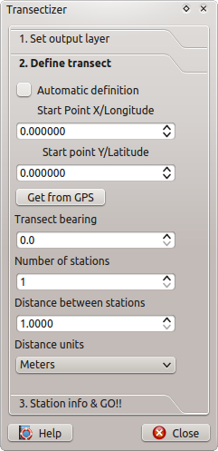
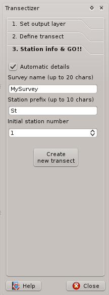

Transectizer is a QGIS plugin which provides an easy way to design linear transects with sampling stations distributed at a given distance along the transect.
Transectizer makes possible to automatically generate each individual station details (transect name, station name, station number) or have control over all the attributes of each station.
You can store your transects in a new layer or provide an existing layer for it. In that case, Transectizer will make the appropiate changes to your layer to make it compatible with Transectizer.
Transectizer has been developed by Jorge Tornero.
(C) 2013, 2014 Jorge Tornero, http://imasdemase.com
Transectizer is released under the terms of the
GNU GENERAL PUBLIC LICENSE
Version 3, 29 June 2007
This program is free software: you can redistribute it and/or modify it under the terms of the GNU General Public License as published by the Free Software Foundation, either version 3 of the License, or (at your option) any later version.
This program is distributed in the hope that it will be useful, but WITHOUT ANY WARRANTY; without even the implied warranty of MERCHANTABILITY or FITNESS FOR A PARTICULAR PURPOSE. See the GNU General Public License for more details.
You should have received a copy of the GNU General Public License along with this program. If not, see:
http://www.gnu.org/licenses
Of course, no donations or fees are required for Transectizer to work... but if you feel that Transectizer has improved you life in any way, you can make a small donation to a NGO/Charity of your choice.
Additionally, if you really feel in the mood of rewarding me, just send me a postcard from where you live. I'll be proud of showing it to my kid.
The basic operation of Transectizer is simple: You choose a point layer to operate, define your transect line, set the distance between the stations to be deployed and the number of them and that's all... Transectizer will add each stations as a new feature into your layer.
This part of Transectizer's main dialog if self-explicative, but there are some caveats to be aware of:
1) When choosing a existing layer, Transectizer will check if the chosen layer has the attributes that Transectizer needs to work:
If your chosen layer doesn't have those attributes, you will be asked for creating them inside your layer or cancel the operation.
2) When creating a new layer, it will be created as a memory layer, so it is mandatory to save to a file if you want to keep your information.

This part of the dialog makes possible to define the line along which the stations are going to be deployed (Yessss, that's the transect!!!)
You will define your transect providing an initial point for it, a bearing for the line and a distance between the stations. For this to be accomplished, Transectizer provides two modes of operation:
1) Automatic transect definition: you have to click on the canvas and drag the mouse. The initial click defines the initial point of the transect and a second point in the transect is defined when releasing the button. Then, Transectizer calculates the bearing of your transect for you. 2) Manual transect definition: you have to provide either an inital and final point for the transect (in that case, Transectizer will calculate the bearing for you) or just the initial point of the transect and the bearing in degrees. In both cases, you must provide the coordinates in the same CRS than your project.
If you have a GPS connection available, you can set your actual coordinates as initial point for your transect.
After defining the line, you have to provide the distance between stations, in the units chosen in the units combobox and the number of stations to be deployed.

Each of the stations deployed will have some information associated. A transectizer enabled layer has some attributes (see Choosing the layer section above) Transectizer has two operation modes that give the user some control and customization over the information stored with the stations.
1) Automatic Station details: with this operation mode, you can provide a fixed survey/station name, an station prefix and an initial station number for all the stations. No observations are allowed in this case, and the station number will be increased sequentially.
2) Manual Station details: When creating the transect, you will be offered with a dialog like this:

Here, you gain total control over station attributes. You can provide a custom transect/survey name, station prefix, station number and observation for each of the deployed stations. You can fix those variables as you wish and even make the station number sequential as you wish.
Please bear in mind that this dialog will pop-up for all and every of the stations that you deploy, so if you design a transect with relatively high number of stations, it can be very tedious!!!
After all steps above are done, you must press over Create new transect button to create a new transect into the layer that you have selected before.
You can create as many transects as you wish in the same layer. When you are done with transect creation, you must press Done button to exit Transectizer dialog.